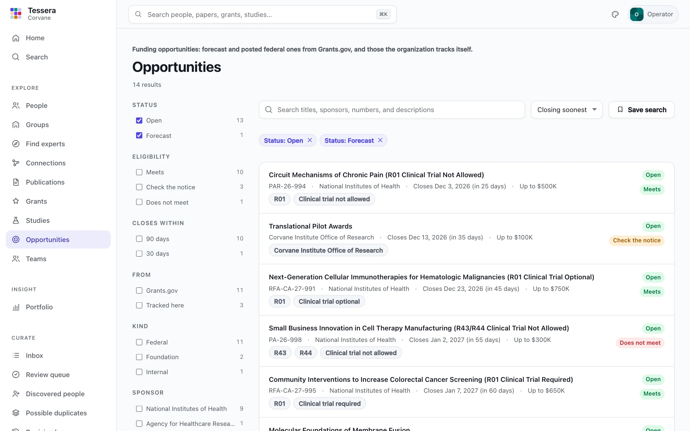
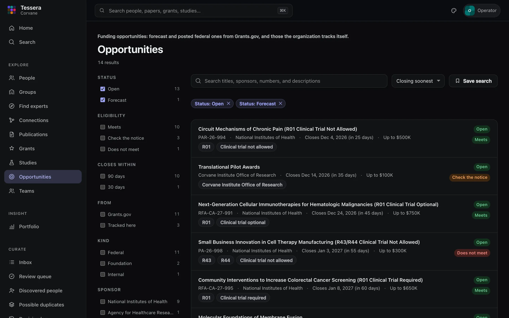
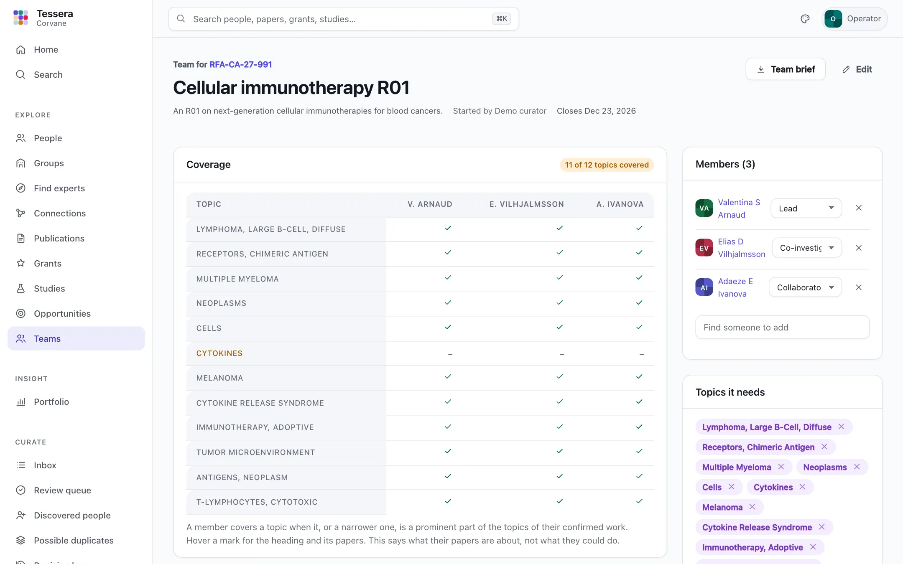
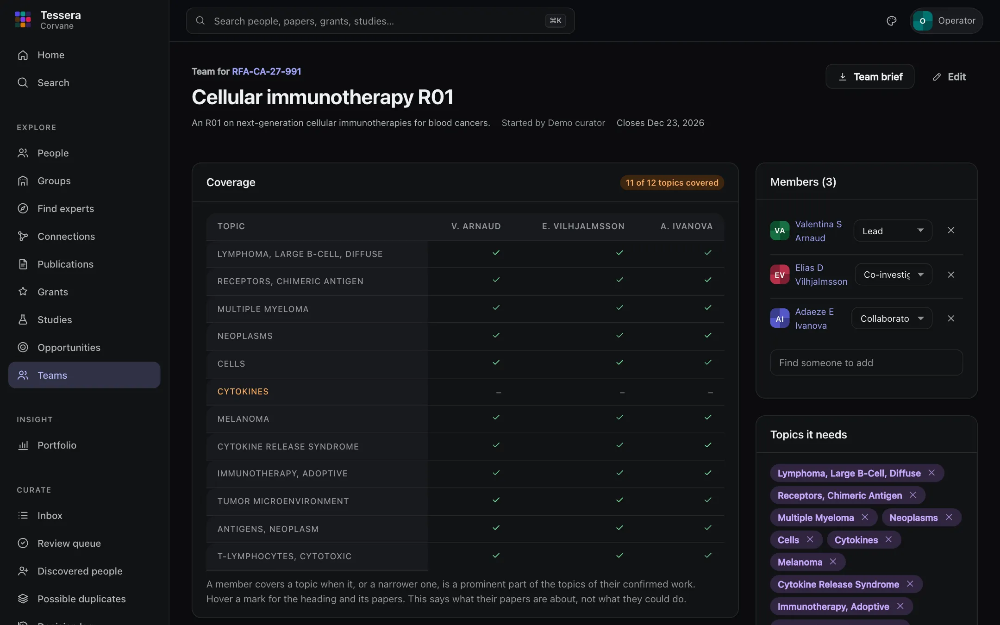

Opportunities
Opportunities lists funding the organization's people could apply for: forecast and posted federal opportunities from Grants.gov, and the foundation calls, internal pilot funds, and limited submissions the organization tracks itself. For each one, Tessera shows two things, always apart:
- Who fits: the people and groups whose work matches what the opportunity is about, and why.
- Whether the organization may apply: its eligibility, check by check, with what each check was decided from.
A strong fit says nothing about eligibility, and an opportunity the organization cannot apply for still shows who fits it, because a collaborator elsewhere might.
The list#


Open and forecast opportunities come first, the soonest deadline first. Filter by:
- Status: open, forecast, closed, or archived.
- Eligibility: meets, check the notice, or does not meet.
- Closes within 30 or 90 days.
- From Grants.gov, or tracked here; Kind (federal, foundation, internal, and so on); Sponsor; NIH activity code; Category.
- Fits my work, once your account is linked to your profile: only the opportunities that fit your confirmed work.
Search finds opportunities by title, sponsor, number, and description, here and in the search box at the top of every page. Save a search to see new matches as they arrive.
An opportunity's page#
The page shows what the opportunity is about, its dates and money (a forecast's are the sponsor's estimates), and its details: for NIH notices, the activity codes, the clinical-trial rule, and a link to the notice in the NIH Guide.
Who fits#


Tessera reads an opportunity as topics, the way an expert search reads a question: the MeSH headings its title and description name (and their synonyms), and the headings of the organization's papers on the same subject. People whose confirmed work matches those topics are listed with the headings that match and how many of their papers carry each. Groups fit through their current members: as well as their best-fitting members do, who are named.
Fit comes in two bands, strong and some, and is never a number to rank people by. If the reading is off, remove a topic or add one, and the opportunity is read again; Reset goes back to Tessera's reading.
Can the organization apply?#
Each check says meets, does not meet, or check (a person must read the notice), and where it came from:
| Check | Decided from |
|---|---|
| Applicant type | The opportunity's eligible applicant types against the organization's, set in [organization] applicant_types |
| Deadline | Its dates: closed opportunities do not meet it; one closing within two weeks is noted |
| Internal deadline | For opportunities the organization tracks, its own earlier deadline |
| Limited submission | The organization may send only a few applications, chosen by an internal competition first |
| Career stage | NIH career, fellowship, and training awards (K, F, T, R00, and the like) depend on the applicant |
| Cost sharing | The sponsor requires matching funds |
Some facts are shown as notes because they decide nothing: whether a clinical trial is required, optional, or not allowed, and that a forecast's dates are estimates. The overall answer is does not meet if any check fails, check the notice if any needs reading, and meets otherwise. Eligibility that depends on the person, such as career stage or citizenship, is never guessed.
Watch or dismiss#
Watch puts an opportunity on your home page; Dismiss takes it off your own lists. Neither changes what anyone else sees.
Building a team#


Start a team on an opportunity's page makes a team that needs the topics the opportunity was read as; Teams in the menu lists yours, and Start a team there makes one for topics you choose. On a team's page:
- Coverage shows each topic the team needs against each member: a mark where the topic, or a narrower one, is a prominent part of the topics of their confirmed work (hover it for the heading and its papers). It says what their papers are about, not what they could do.
- Missing topics lists the topics nobody on the team covers, each with people who do, ordered by how well they cover that gap and shown with their reasons. Add one with a click.
- Others who fit the opportunity lists the rest of the people who fit it.
- Members takes a role for each person (lead, co-investigator, collaborator, core or resource, other); Topics it needs can be changed; Worked together says who on the team has papers, grants, or studies in common, and how many pairings would be new; Groups it spans lists their groups.
A team is its owner's, and can be seen by its members (once their accounts are linked to their profiles), by the people its owner shares it with, and by admins. Only its owner or an admin shares or deletes it.
Team brief gives a page to print or save as PDF: the team, its opportunity, each member's role with their confirmed papers on its topics, their active NIH grants and their studies (with registry status), the coverage, and the groups spanned, with the data's sources and dates. It also downloads as Markdown, and the members as CSV. Only confirmed papers are listed, because the reader cannot see the evidence.
Where else opportunities appear#
- Home: opportunities that fit your work, and those you watch.
- A person's profile: the open opportunities that fit them.
- A group's page: the open opportunities that fit it through its members (inside the organization only, never on the public site).
- A group's inbox and the weekly digest: opportunities that arrived since the inbox was last reviewed and fit the group.
Opportunities the organization tracks#
Curators for everyone and admins keep these in Admin → Opportunities: add one, edit it, archive it (it is kept, and can be restored), or import many from a spreadsheet. An import is CSV with a header row, or JSON, with these columns:
| Column | Meaning |
|---|---|
source | Who offers or lists it, such as a foundation or the organization's research office (required, or give --source for every row) |
external_id | Its identifier there; importing the same rows again updates them (without one, the number or else the title stands in) |
kind | foundation, internal, federal, state, industry, or other |
title | Required |
number, sponsor, description, url, eligibility_notes | Text |
posted_on, closes_on, internal_deadline | Dates, as YYYY-MM-DD |
award_floor, award_ceiling | Dollars |
limited_submission | yes or no |
applicant_types | Grants.gov's applicant type codes, separated by semicolons |
tessera opportunities import foundation-calls.csv --source "Example Foundation" --dry-run
tessera opportunities import foundation-calls.csv --source "Example Foundation"--dry-run reports what would change and changes nothing. --complete says the file is the source's whole list, so its opportunities the file no longer lists are archived. Nothing is written if any row has a problem.
Keeping them current#
Each tessera sync reads Grants.gov (see Configuration to narrow it by funding category or agency) and then works out who fits each open opportunity, after the concept profiles. The first sync reads every opportunity's details, about one a second (some 1,500 opportunities); later ones read only what changed. tessera build opportunities works out the fits again on its own.